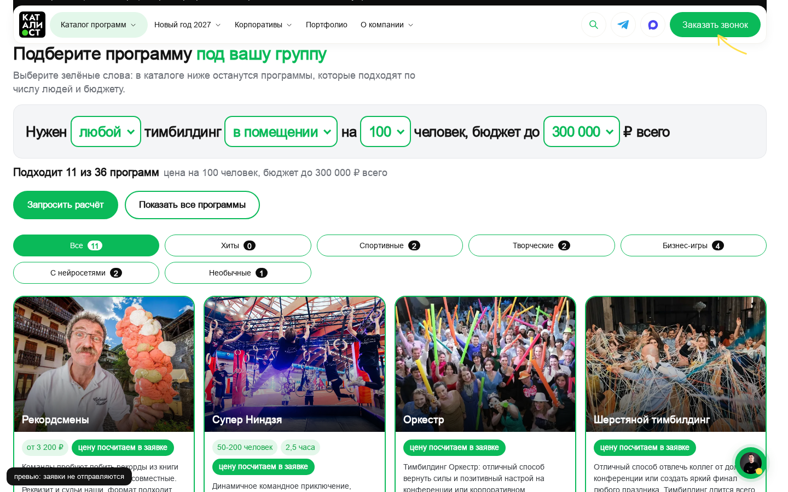
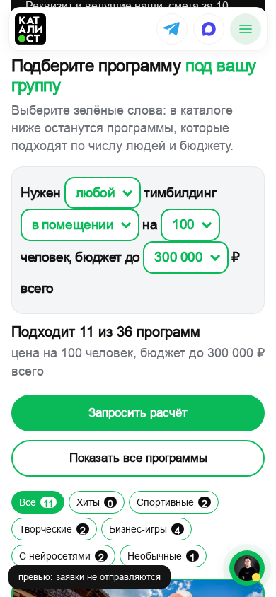
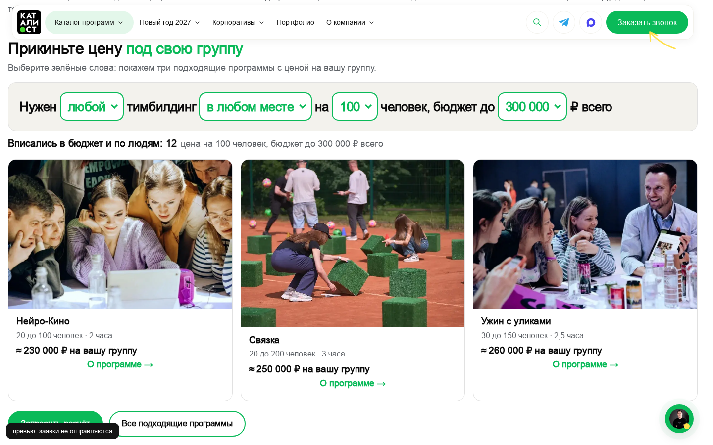
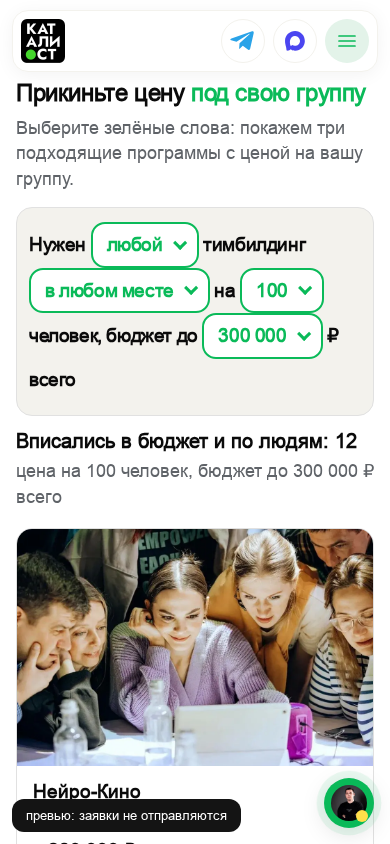
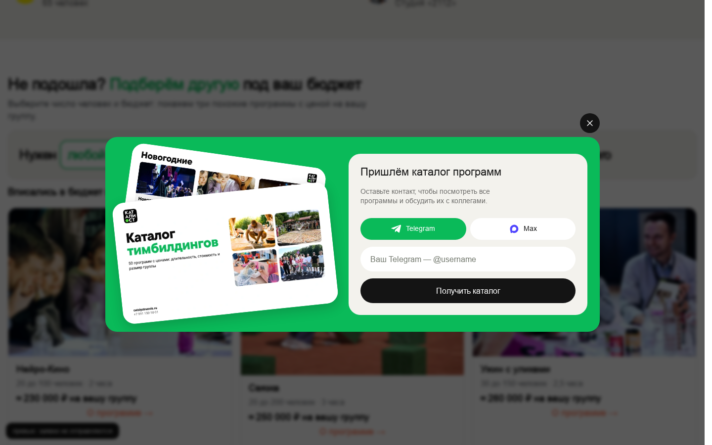
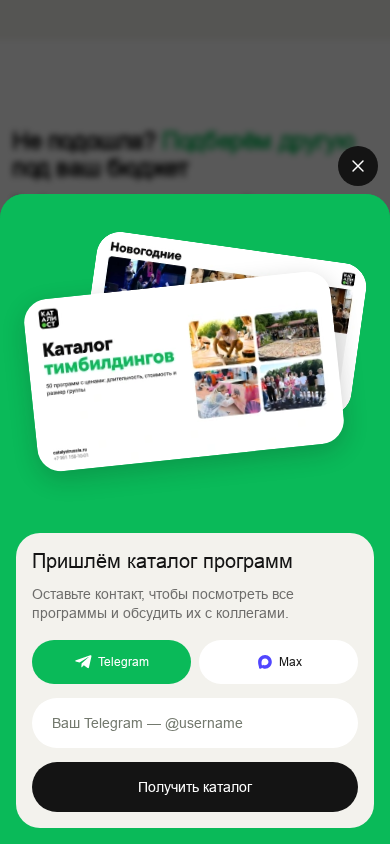

Подбор тимбилдинга на сайте: 4 места
Ниже копии живых страниц Каталист с настоящей шапкой. В каждой копии стоит компонент подбора. Ссылки на программы и картинки ведут на живой сайт.
превью: заявки не отправляются
Нужен любой тимбилдинг в помещении на 100 человек, бюджет до 300 000 ₽ всего
Рекомендую вариант А для меню. Он занимает ту же строку и ничего не убирает. Вариант Б заметнее, но забирает место у акций и слайдера «Фото в подарок».
Каталог /timbilding/: подбор над чипами категорий
- Где
- Страница /timbilding/, между заголовком и чипами «Все, Хиты, Спортивные…».
- Как работает
- Фраза с зелёными списками. Любой выбор оставляет в каталоге подходящие программы, на карточках появляется цена на вашу группу, счётчики на чипах пересчитываются. «Показать все программы» возвращает весь каталог. Кнопка «Запросить расчёт» открывает форму заявки. Параметры из адреса тоже работают.
- Зачем
- /timbilding/: 42% отказов и 1% обращений. Без выбора человек видит 36 карточек и цену «от»; с подбором видит цену на свою группу.


Статья /korporativ-idei/: компактная фраза в середине
- Где
- Статья «Идеи для корпоратива», перед разделом «Как считать бюджет корпоратива на человека?».
- Как работает
- Фраза и три подходящие программы с ценой на вашу группу. «Запросить расчёт» раскрывает форму, «Все подходящие программы» ведёт на страницу подбора с теми же параметрами.
- Зачем
- /korporativ-idei/: 424 входа и 1 обращение с 01.08. Читатель дошёл до разговора о бюджете, и тут же получает цену под свою группу.


Страница программы: «Не подошла? Подберём другую под ваш бюджет»
- Где
- /teambuilding/vse-programmy/gorodskaya-strojka/, внизу, перед блоком «Вас также могут заинтересовать».
- Как работает
- Та же фраза и три альтернативы, текущей программы (Мегаполис) среди них нет. «Запросить расчёт» раскрывает форму, «Все подходящие программы» ведёт на страницу подбора.
- Зачем
- Человек, которому программа не подошла по цене или числу людей, получает замену на этой же странице. Цифр Метрики по этой странице у меня нет, замерим после запуска.


Страница подбора читает адрес
Открыть страницу подбора С параметрами из меню
Параметры в адресе:
mesto: any, room, street, trip (любое, в помещении, на улице, на выезде)lyudi: число человек, например 150byudzhet: число в рублях, например 500000, или any (бюджет не важен)format: any, sport, tvorch, biz, cook, neuro, ny, zima, leto
Пример: ?mesto=trip&lyudi=150&byudzhet=500000. Лишние и неверные значения страница пропускает и берёт обычные: 100 человек, 300 000 ₽.